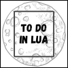

Welcome to To Do in Lua
This is a sample application in Lua with Web View as GUI (Graphical User Interface) totaly compatible with Windows Environment. You may manager your tasks controls and your tasks through this app.

This is a sample application in Lua with Web View as GUI (Graphical User Interface) totaly compatible with Windows Environment. You may manager your tasks controls and your tasks through this app.